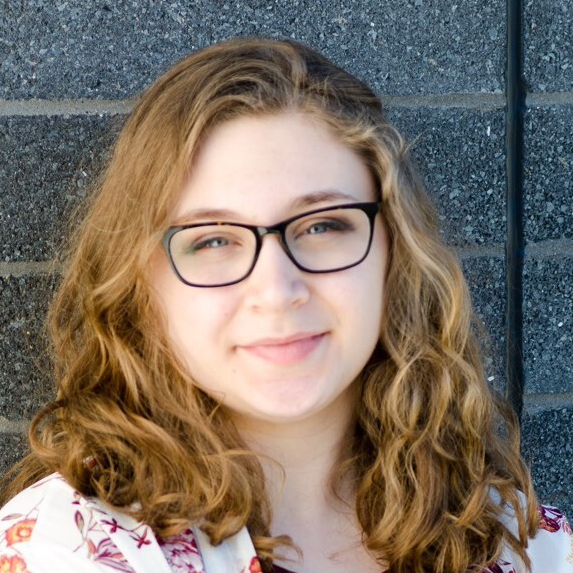
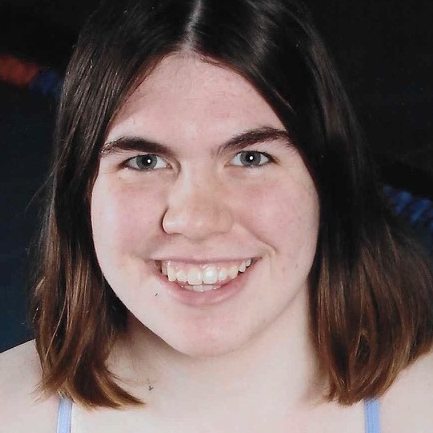
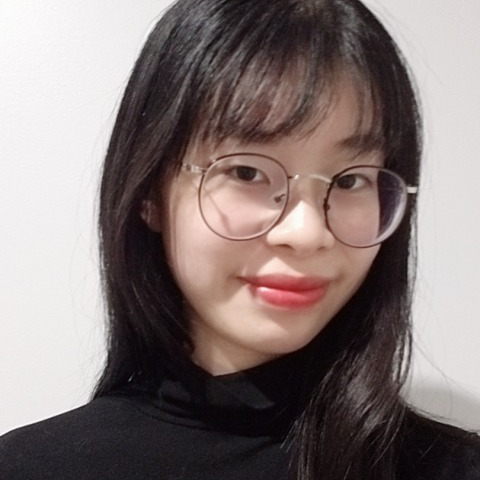

Lana Verschage (She/Her/Hers)
Director of Women in Computing
Responsible for the development of all programs, events, presentations, communications and marketing associated with Women in Computing at RIT whose purpose is to motivate and inspire girls and young women to choose computing as a profession and to recruit and retain women students for the Golisano College of Computing at RIT.
General Meetings: Wed • 6:30pm • Zoom
Dominique Molee (She/Her/Hers)
Logistics

The responsibilities of Logistics are to assist the Director, maintain WiC calendar, send updates regarding upcoming events, maintain membership information, and maintain historical information.
Wendy Liu (She/Her/Hers)
Public Relations Committee Head

The responsibilities of Public Relations committee are to update and maintain Social Media, brochures and newsletters. They are also responsible for scheduling company tech talks, info sessions and cultivating relationships with university recruiters at the RIT career fair. This committee plans and executes WiConnects, a networking event for Golisano faculty, students and WiC Allies.
PR Meetings: Mon • 7-8pm
Sam McQuate (She/Her/Hers)
Outreach Committee Co-Head

Responsibilities consist of planning and executing activities for the K-12 population such as After-Hours, the Accepted Student Overnight Program, secondary school visits to campus for tours and workshops, Orientation, College & Careers, Open Houses, Kids on Campus Summer Camp, and shadow visits from prospective students.
Outreach Meetings: Thurs • 8-9pm
Kelsey Donovan (She/Her/Hers)
Outreach Committee Co-Head

Responsibilities consist of planning and executing activities for the K-12 population such as After-Hours, the Accepted Student Overnight Program, secondary school visits to campus for tours and workshops, Orientation, College & Careers, Open Houses, Kids on Campus Summer Camp, and shadow visits from prospective students.
Outreach Meetings: Thurs • 8-9pm
Alison Nakai-Lackey (She/Her/Hers)
Events Committee Head
The responsibilities of the Events committee are to plan, advertise, and execute internal and external social events, student tech talks, outings, and combined events with other Golisano clubs.
Events Meetings: Sun • 4-5pm
Darlene Ardila (She/Her/Hers)
WiCHacks Committee Head
The responsibilities of the WiCHacks committee are to plan and execute the annual WiC Hackathon, a women only hackathon. Planning includes obtaining company sponsors and mentors, scheduling API workshops and tech talks, and planning a Newbie Track for women who haven’t coded before.
WiCHacks Meetings: Mon • 7-8pm
James Testa (He/Him/His)
Projects Committee Head
The responsibilities of the Projects committee are to encourage students of all majors to come together and work on a project of interest that is fun and can grow students’ technical skills. The goal is to present the project at Imagine RIT.
Projects Meetings: Tues • 6-7pm
Amy Tan (She/Her/Hers)
Webmaster

The Webmaster is responsible for updating and maintaining the Women in Computing website and the WiCHacks website.
Jacquelyn Leung (She/Her/Hers)
Allies Committee Head

WiC Allies is a group of RIT and GCCIS community members committed to furthering the mission and goals of Women in Computing, for the purpose of affecting positive change and fostering a more inclusive GCCIS culture.
Allies Meetings: Mon • 8-9pm